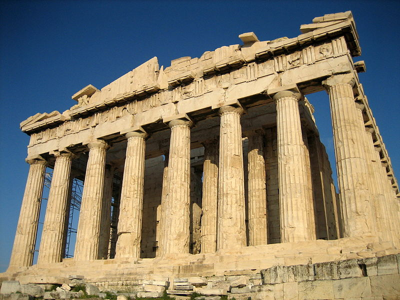

Att inleda en betraktelse med dessa ord är nog det mest osexiga grepp man kan tänka sig. Men här råkar det vara motiverat: redan antikens greker förstod betydelsen av torget, agora, som mötesplats när de för 2 500 år sedan introducerade den styrelseform som kallas demokrati, folkstyre.
Den grekiska direktdemokratin var synnerligen beskuren. Kvinnor, invandrare och slavar var uteslutna. Men på torget, omgivet av kolonnader, samlades fria män för att diskutera och besluta i gemensamma angelägenheter.
Via renässansens stadsstater blev föreställningen om torget en central komponent i den moderna demokratin, där medborgarna möts som jämlikar, oavsett klass, kön, ursprung, utbildning, religion, livsstil och ideologi. Åsikter bryts mot varandra, idéer korsbefruktas, fördomar slipas ned, auktoriteter ifrågasätts och kompromisser ingås i ett kretslopp som utgör det öppna samhällets livsluft.
Beskrivningen är naturligtvis idyllisk. I praktiken kan det aldrig existera något sådant som ett demokratiskt idealtillstånd av den enkla anledningen att det är med demokratin som med människan: den är inte perfekt. Detta, demokratins djupa mänsklighet, gör den överlägsen andra system. Men demokrati förutsätter därmed också möten.
Så vad händer när det gemensamma torget töms och medborgarna, individuellt eller i grupp, skapar egna torg, isolerade kokonger, där deras värderingar och slutsatser ständigt bekräftas av likasinnade?
Frågan speglar det förhållandet att den på många sätt fantastiska och befriande informationsrevolutionen har en baksida. Ett ständigt expanderande utbud av källor, inte minst på nätet, innebär, aningen paradoxalt, att medborgarna får allt större möjligheter att bygga strikt avgränsade torg, skyddade utrymmen, där inga fakta blir ifrågasatta och inga förutfattade meningar störs av kritiska synpunkter.
Någonstans på vägen förvandlas stimulerande friktion till förlamande polarisering.
Till detta kommer den digitala fördumningen. I kraft av tillgängligheten och de enorma informationsmängderna skapar nätet en illusion av snabba och bekväma genvägar till kunskap – klicka och skumma istället för att läsa och reflektera – som i sin tur göder ett växande bildningsförakt. Demokratins kognitiva motståndskraft försvagas. Kollegan Andreas Ekström har beskrivit det med syrlig precision: ”Du har disputerat. Jaha, men jag har googlat, och du har fel.”
Längst har det gått i USA, alltid i framkant när det gäller strategier för opinionsbildning.
USA:s politiska och konstitutionella system, en gång betraktat som förebild, har blivit dysfunktionellt. Låsningen mellan, förenklat uttryckt, en republikansk höger och en demokratisk vänster är nästan total. Relationerna mellan den lagstiftande och verkställande makten, det vill säga kongressen och presidenten, är djupfrysta. Den politiska polariseringen har nått rekordnivåer.
Det var precis så som grundlagsfäderna önskade att det inte skulle vara. De konstruerade ett system som genom balanserande och kontrollerande funktioner skulle motverka maktmissbruk och underlätta rationella beslut. De mekanismerna har på senare år satts ur funktion av ett förändrat medielandskap och framför allt av det fenomen som kallas ekokammare, slutna rum, där meningsfränder förstärker varandras åsikter; som man ropar får man svar.
Tydligast är det på högerkanten, där radiopratare som Rush Limbaugh, den Murdochägda tv-kanalen Fox News och reaktionära bloggar och sajter tillhandahåller en miljö kliniskt fri från information som komplicerar färdiga uppfattningar. Så sväller galna rykten och konspirationsteorier till upplevda sanningar – om att president Obama är muslim, om att klimathotet är ett påhitt, om att FN hotar USA:s självständighet. Nätet, allt viktigare som plattform för politisk påverkan, förstärker ekoeffekten.
Mycket av detta sker i bedräglig förklädnad av seriös nyhetsförmedling för att ”balansera” de traditionella mediekanalernas påstådda vänstervridning. ”Alla vet" ju att New York Times egentligen är ett socialistiskt kamporgan.
I själva verket handlar det om produktion av fördomar – med nedbrytande konsekvenser. Det är rent av så illa, visar forskningen, att den som regelbundet följer Fox News vet mindre om vad som faktiskt händer än den som inte följer några nyheter överhuvudtaget.
Dit har Sverige inte nått – ännu. Men även här ekar det. Torget krymper och polariseringen tilltar, särskilt i explosiva frågor som migrations- och flyktingpolitik.
Att extremhögern och extremvänstern har sina mötesplatser, där deltagarna vältrar sig i dyn, är inte särskilt förvånande. Företeelsen kräver vaksamhet, men är än så länge tämligen marginell och dessutom svårt komprometterad. Mer problematiskt är att den etablerade högern och vänstern har börjat isolera sig i digitala reservat, ofta grupperade kring respekterade mediekanaler som skänker en nimbus av trovärdighet.
Den som, rent generellt, anser att ”sossar” är stygga och dumma och att vinst är vackert har en uppsjö av ekokammare att välja bland. Det har även den som, rent generellt, tycker att ”borgare” är stygga och dumma och att vinst är fult.
Syftet blir att stärka de redan frälsta, inte att försöka påverka de andra. Torgets brusande dialoger övergår i bloggosfärens ekande monologer.
Det är inte en tillfällighet att den här processen pågår parallellt med krisen för den traditionella mediebranschen och då särskilt tidningarna.
Fullt medveten om att jag talar i egen sak efter 35 skrivande år skulle jag vilja påstå att den moderna demokratins torg var vad som numera, lätt avfärdande, kallas gammelmedier.
I begynnelsen var dagspressen, senare kompletterad av radion och televisionen. De bildade, med sina olika inriktningar och geografiska förankringar, en infrastruktur som höll igång aktiviteten på det gemensamma torget. Att läsa en tidning var att konfronteras med den röriga verkligheten, fångad i text och bild: stort och smått, högt och lågt, nära och fjärran, torra telegramnotiser och blommiga kåserier, åsikter och infall, glädje och sorg. Men det var en organiserad röra, professionellt sorterad och värderad av journalister, redigerare och fotografer.
Så är det fortfarande, men villkoren förändras ofrånkomligen på grund av strukturella, tekniska och ekonomiska realiteter. Tidningen, så som vi en gång lärde känna den på papper, har inte längre lyxen att ta sin framtid för given. Redaktioner bantas och läggs ned. Ambitioner sänks och språkbruk infantiliseras.
Fast god journalistik kommer ändå alltid att efterfrågas, om än distribuerad på andra sätt och genom andra kanaler.
Här uppstår emellertid ett glapp i övergången från gammalt till nytt. I det glappet lurar en av de stora farorna för demokratin: ett klassamhälle som definieras av tillgång till information och kunskap. Kvalitetsjournalistik är dyrt. Följaktligen riskerar den att bli en angelägenhet endast för eliten.
Med begreppet ”nyhetsundvikare” avses personer som vänder ryggen åt traditionell nyhetsförmedling. Andelen svenskar som tillhör denna kategori ökar och uppgår nu till 17 procent. Samtidigt minskar läsandet av tidningar och böcker, mest bland ungdomar. När torget krymper får färre plats.
Det är en del av problemet. Gammelmedierna är speciella i den bemärkelsen att de genom sortering och värdering tvingar oss att möta de andra åsikterna, personerna och perspektiven. Så stimuleras eftertanke, kunskapsspridning och ömsesidighet, nödvändiga ingredienser i en frisk demokrati.
Även detta fenomen, besläktat med ekokammaren, har ett namn: filterbubblor. Sökmotorer som Google kartlägger användarnas historik. Två personer som letar efter exakt samma information kan därför få helt olika träffbilder beroende på vad de köpt, läst och tittat på. När jag häromdagen skulle kontrollera en uppgift på BBC:s sajt kom det bums upp ett erbjudande – om att köpa min egen senaste bok. Roligt på ett sätt, obehagligt på ett annat.
Traditionella medieföretag hakar på och ser personanpassning som framtidens melodi. Vill du ha mer lokalt, mer kultur, mer sport? Vi skapar en skräddarsydd mix så att du automatiskt befrias från störande möten med det annorlunda och oväntade. Vi presenterar världen så som du vill se den, inte så som den ser ut.
Torget är hotat och måste räddas, på något vis, i någon form. Utan torg ingen demokrati. Det visste redan de gamla grekerna.
Echo Chamber. Rush Limbaugh and the Conservative Media Establishment (Oxford) av Kathleen Hall Jamieson och Joseph N Cappella.
Political Polarization in the American Public (Pew Research Center, 2014).
Demokratin och det förändrade medielandskapet. Mot ökade kunskapsklyftor och deltagandeklyftor? (2014 års demokratiutredning) av Jesper Strömbäck.
The Filter Bubble. What The Internet Is Hiding From You (Penguin) av Eli Pariser.